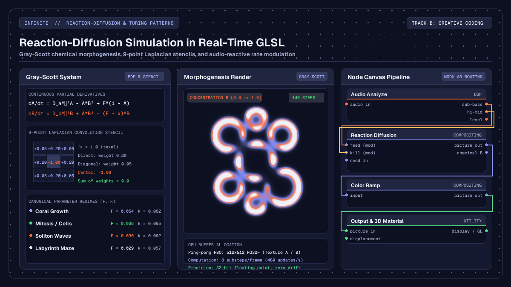

Creative
Reaction-diffusion simulation in real-time GLSL
How to build a reaction-diffusion simulation in real-time GLSL shaders and nodes, creating generative Turing patterns with audio-reactive parameter modulation.

on this page
- The morphogenesis equations of Alan Turing and Gray-Scott
- Discretising the continuous Laplacian on a GPU pixel grid
- Simulating reaction-diffusion with the native node
- Writing custom reaction-diffusion in Field Pixel
- Modulating feed and kill rates with live audio spectrum bins
- Mapping chemical concentrations to 3D surfaces and shaders
- Headless validation and batch rendering
A reaction-diffusion simulation in real-time GLSL brings the organic complexity of natural morphogenesis directly into creative coding and live visual performance. From the spots on a leopard and the stripes on a zebrafish to coral formations and cellular colonies, biological patterns are rarely drawn with static geometry. Instead, they grow out of non-linear chemical interactions where substances spread, react, and compete across space.
In audiovisual environments like Infinite, reaction-diffusion simulations can run entirely on the GPU, updating at high frame rates while reacting to incoming sound. By coupling partial differential equations to real-time audio analysis, artists can guide chemical morphogenesis with musical rhythm, using bass frequencies to seed new matter and high frequencies to trigger cell division.
Here is how the underlying chemistry works, how to discretise the equations for GLSL execution, and how to patch an audio-reactive reaction-diffusion pipeline using both native nodes and custom Field kernels.

The morphogenesis equations of Alan Turing and Gray-Scott
The mathematical foundation of biological pattern formation was introduced in 1952 by Alan Turing in his paper The Chemical Basis of Morphogenesis. Turing demonstrated that a system of two reacting chemicals with different diffusion rates, initially distributed almost uniformly, can spontaneously break symmetry and produce stable spatial patterns: spots, stripes, and whorls.
The most widely adopted model in computer graphics and creative coding is the Gray-Scott reaction-diffusion formulation, developed in 1983. In this model, two hypothetical chemical substances, chemical A and chemical B, diffuse across a two-dimensional grid while undergoing an autocatalytic reaction.
Chemical A represents a nourishing substrate that is constantly replenished at a feed rate F. Chemical B represents an active catalyst that consumes chemical A to duplicate itself through the reaction:
2B + A -> 3BAs chemical B reproduces, it also decays and is removed from the system at a kill rate k. The continuous system is governed by two coupled partial differential equations:
dA / dt = D_a * ∇²A - A * B² + F * (1.0 - A)
dB / dt = D_b * ∇²B + A * B² - (F + k) * BHere:
D_aandD_bare the spatial diffusion rates of substances A and B. For pattern formation to occur, substance A must diffuse significantly faster than substance B, typically withD_a = 1.0andD_b = 0.5.∇²is the Laplacian operator, which computes the second spatial derivative of chemical concentration: measuring whether a point has a higher or lower concentration than its surrounding neighbourhood.A * B²is the non-linear reaction term representing the conversion of substrate A into catalyst B in the presence of two units of B.F * (1.0 - A)represents the replenishment of chemical A toward its maximum saturation level of1.0.(F + k) * Brepresents the depletion of chemical B through natural decay and dilution.
The delicate balance between the feed rate F and the kill rate k determines the resulting morphological pattern. Small changes in these two numbers move the simulation between distinct visual regimes:
- Coral growth (
F = 0.054,k = 0.062): slender dendritic branches that expand outward and weave together. - Mitosis and dividing cells (
F = 0.036,k = 0.065): individual circular spots that grow, deform into dumbbells, and divide into autonomous pairs. - Soliton waves (
F = 0.030,k = 0.062): pulsating spots and traveling ripples that interact elastically. - Labyrinthine maze (
F = 0.029,k = 0.057): dense fingerprint-like ridges and interconnected loops that fill the canvas.
Discretising the continuous Laplacian on a GPU pixel grid
To execute the Gray-Scott model on modern graphics hardware in real time, the continuous spatial derivatives must be discretised onto a discrete two-dimensional grid of texels.
The Laplacian operator ∇² measures the divergence of the gradient: the net flow of chemical into or out of a local area. On a discrete square grid with texel spacing Δx = 1.0, we compute the Laplacian using a two-dimensional convolution kernel evaluated over each pixel and its eight immediate neighbours:
∇²U(x, y) ≈
0.05 * U(x - 1, y - 1) + 0.20 * U(x, y - 1) + 0.05 * U(x + 1, y - 1) +
0.20 * U(x - 1, y) - 1.00 * U(x, y) + 0.20 * U(x + 1, y) +
0.05 * U(x - 1, y + 1) + 0.20 * U(x, y + 1) + 0.05 * U(x + 1, y + 1)Notice the arithmetic structure of this 9-point stencil:
- The orthogonal direct neighbours (top, bottom, left, right) each receive a weight of
+0.20. - The diagonal corner neighbours receive a weight of
+0.05. - The central pixel receives a weight of
-1.00. - The sum of all nine weights equals exactly
0.0.
This zero-sum constraint guarantees that in an area of uniform concentration where all neighbouring pixels have identical values, the Laplacian evaluates to zero: no spurious chemical diffusion is created out of nothing.
Because the numerical simulation must feed its own output back into its input on subsequent time steps, real-time GPU implementations allocate two 32-bit floating-point textures (an RG32F ping-pong framebuffer pair). Channel R stores the concentration of chemical A, while channel G stores the concentration of chemical B.
In each rendering pass, the fragment shader samples the current state texture, computes the discrete Laplacian, evaluates the reaction equations, and writes the updated (A, B) values to the secondary texture. On the next step, the roles of the two textures are swapped.
To maintain temporal stability while avoiding spatial aliasing, multiple integration substeps are evaluated per displayed video frame: typically between 4 and 16 iterations per frame with a time step dt = 1.0.
Simulating reaction-diffusion with the native node
Infinite provides a native GPU-accelerated compositing node designed specifically for this physical process: the Reaction Diffusion node.
The node runs an optimised multi-pass fragment shader pipeline on the graphics card, giving access to the full Gray-Scott parameter space without requiring manual framebuffer setup or ping-pong buffer management.
The node exposes several key controls:
preset: quick access to canonical Morphogenesis regimes including Coral, Mitosis, Maze, Spots, Worms, and Holes.feed: the replenishment rate of substrate A (ranging from0.01to0.09).kill: the decay rate of catalyst B (ranging from0.03to0.08).diffuse A: spatial propagation speed of substrate A (default1.0).diffuse B: spatial propagation speed of catalyst B (default0.5).steps / frame: number of numerical substeps executed per video frame (ranging from1to32, defaulting to8).source influence: blends incoming image or video frames directly into chemical concentrations, allowing live cameras or video clips to deposit catalyst B onto the grid.
When wired into an output chain, the scalar concentration of chemical B represents the biological pattern. By connecting the output of Reaction Diffusion to a Color Ramp node, artists can map the continuous chemical gradients onto rich palettes, from iridescent oceanic hues to high-contrast monochrome prints.
Writing custom reaction-diffusion in Field Pixel
For artists and developers who require complete control over the mathematical formulation, Infinite includes Field, a domain-specific kernel language that compiles directly to GLSL.
Using a Field Pixel node, you can write the full reaction-diffusion kernel in concise code. The state keyword declares persistent frame-to-frame memory cells that automatically allocate ping-pong GPU textures under the hood.
Here is a complete, self-contained Gray-Scott reaction-diffusion kernel written in Field:
// Field Pixel: Gray-Scott Reaction-Diffusion Kernel
param float feed = 0.037 [0.01, 0.08]
param float kill = 0.060 [0.03, 0.08]
param float diffA = 1.0 [0.2, 1.5]
param float diffB = 0.5 [0.1, 1.0]
// Declare persistent chemical concentration buffers
state vec2 chem = vec2(1.0, 0.0)
// 1. Initialise small central seed perturbations
if (frame < 2) {
vec2 p = uv - vec2(0.5);
if (dot(p, p) < 0.002) {
chem = vec2(0.5, 0.25);
} else {
chem = vec2(1.0, 0.0);
}
} else {
// 2. Sample 9-point Laplacian from previous frame state
vec2 texel = 1.0 / resolution;
vec2 lap = -1.0 * chem;
lap += 0.20 * chem_prev(uv + vec2(-texel.x, 0.0));
lap += 0.20 * chem_prev(uv + vec2( texel.x, 0.0));
lap += 0.20 * chem_prev(uv + vec2(0.0, -texel.y));
lap += 0.20 * chem_prev(uv + vec2(0.0, texel.y));
lap += 0.05 * chem_prev(uv + vec2(-texel.x, -texel.y));
lap += 0.05 * chem_prev(uv + vec2( texel.x, -texel.y));
lap += 0.05 * chem_prev(uv + vec2(-texel.x, texel.y));
lap += 0.05 * chem_prev(uv + vec2( texel.x, texel.y));
// 3. Evaluate non-linear reaction terms
float a = chem.x;
float b = chem.y;
float reaction = a * b * b;
float da = (diffA * lap.x) - reaction + feed * (1.0 - a);
float db = (diffB * lap.y) + reaction - (feed + kill) * b;
// 4. Update concentrations and clamp within physical bounds
chem = clamp(vec2(a + da, b + db), vec2(0.0), vec2(1.0));
}
// 5. Output chemical B mapped to visual colour
col = vec3(chem.y * 2.8, chem.y * 1.4, chem.y * 3.5);To explore more examples of shader development in Field, refer to the guide on audio-reactive GLSL shaders and the comprehensive Field language manual.
Modulating feed and kill rates with live audio spectrum bins
The most compelling aspect of running physical simulations in a unified audiovisual workstation is modulation. In Infinite, modulation is not an afterthought handled over slow network bridges: audio analysis, visual synthesis, and parameter controls share one lock-free evaluation graph.
To build an audio-reactive reaction-diffusion system:
- Insert an audio source, such as an
Oscillator,Analogsynth, orAudio Filenode. - Connect the audio signal to an
Audio Analyzenode. The node splits the incoming sound into eight isolated frequency bands: sub-bass, bass, low-mid, mid, high-mid, presence, brilliance, and air. - Patch the
sub-basspin directly into thefeedparameter of theReaction Diffusionnode. As heavy kick drums or bass notes trigger, the feed rate temporarily spikes upward. This floods the grid with fresh substrate A, stimulating aggressive outward branch growth and pattern expansion. - Patch the
high-midorpresencepin into thekillparameter with an inverted modulation amount. When sharp snare hits or hi-hats land, the kill rate momentarily drops, allowing catalyst B to survive in regions where it would normally decay. This causes solid labyrinth ridges to fracture into clusters of dividing mitotic cells in step with the beat. - Alternatively, patch the
Audio Analyzeoutput into aNoisenode, and connect the resulting texture to theinputpin ofReaction Diffusion. By settingsource influenceto0.2, transient acoustic energy injects localized bursts of catalyst directly onto the canvas, nucleating new self-replicating organisms at the sound of each musical event.
Mapping chemical concentrations to 3D surfaces and shaders
Reaction-diffusion is not restricted to flat two-dimensional video planes. The chemical density field can serve as a procedural displacement map, roughness texture, or volumetric density function for three-dimensional geometry.
In Infinite, you can wire the output of Reaction Diffusion directly into the input of a Displacement node. When applied to a high-density primitive such as a Sphere, Torus Knot, or subdivided Plane:
- The scalar concentration of chemical B drives vertex displacement along the surface normal vectors. Labyrinthine ridges rise out of the geometry like organic coral reefs or carved bone.
- The same texture is routed into a
Materialnode to control roughness and metallic sheen. Valleys where catalyst B is depleted remain glossy and smooth, while displaced ridges take on tactile matte finishes. - Placing directional and point lights with subtle ambient occlusion transforms the abstract mathematical output into realistic, physical sculptures that appear to breathe and morph in real time.
A selection of ready-to-use procedural patches and generative templates is available in the free Infinite Library.
Headless validation and batch rendering
Because Infinite features a robust headless command-line interface, reaction-diffusion patches can be verified, inspected, and rendered to lossless ProRes or MP4 video without ever opening a graphical window.
Here is a minimal, complete patch file defining an audio-reactive reaction-diffusion network. Save this plain text as reaction_diffusion.inf:
infinite-patch 1
rev 2
node 1 Source Audio File
id audio
s path "drums.wav"
end
node 2 DSP Audio Analyze
id analyze
end
node 3 Compositing Reaction Diffusion
id rd
i preset 2
f feed 0.037
f kill 0.060
i stepsPerFrame 8
end
node 4 Compositing Color Ramp
id ramp
end
node 5 Utility Output
id out
end
cable analyze 0 audio
cable rd 0 analyze
cable ramp 0 rd
cable out 0 ramp
mod rd feed analyze 0 0.01 0.08 0.4
mod rd kill analyze 4 0.04 0.07 -0.3You can validate the patch syntax and ensure all cable connections are strictly legal using the command line:
Infinite --validate reaction_diffusion.infTo render stills at specific time stamps and inspect the organic pattern evolution:
Infinite --frame reaction_diffusion.inf 1.0,2.5,5.0 output/ --contact-sheet sheet.pngTo render the finished audiovisual composition to a video file:
Infinite --render reaction_diffusion.inf render.mp4 --duration 15.0 --fps 60Detailed instructions on command-line flags, render automation, and CI integration can be found in the Headless User Guide.
By uniting non-linear differential equations, GPU fragment pipelines, and zero-latency audio modulation, reaction-diffusion in Infinite turns abstract biochemical morphogenesis into an expressive, interactive instrument for generative art.